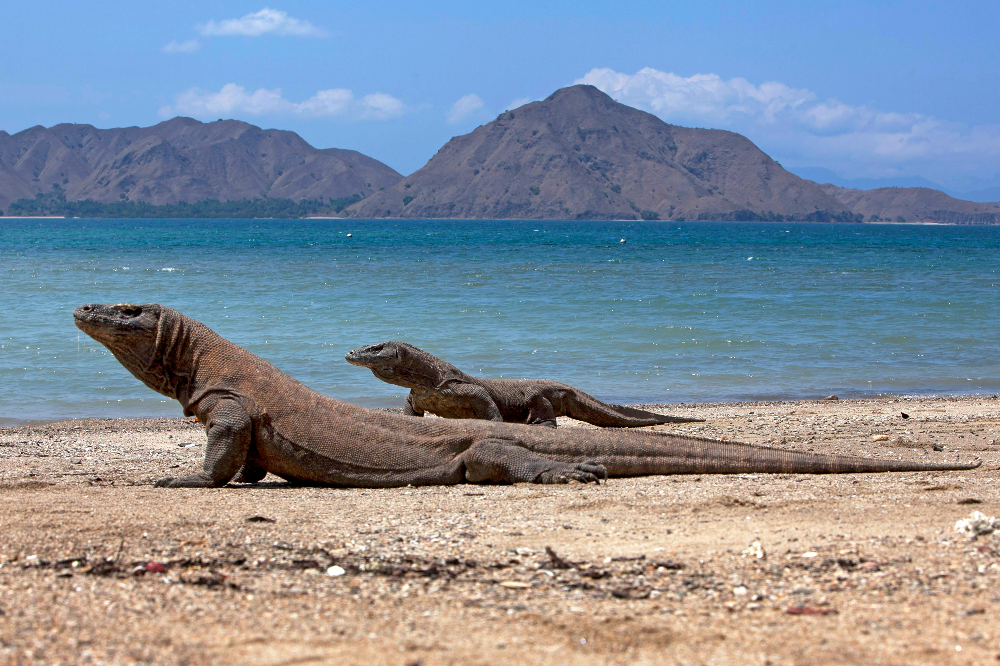
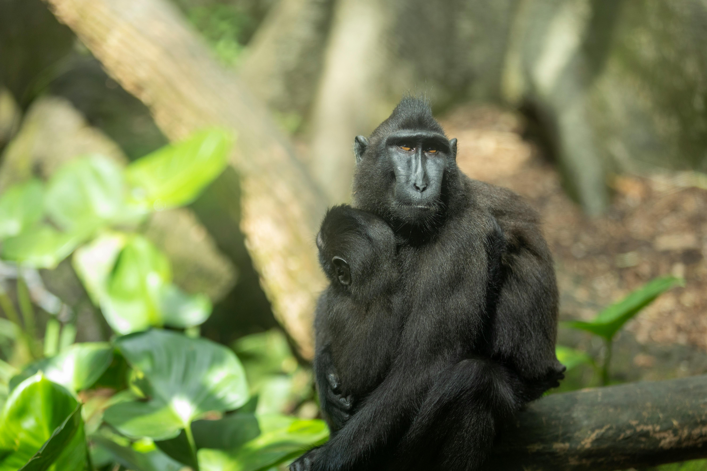
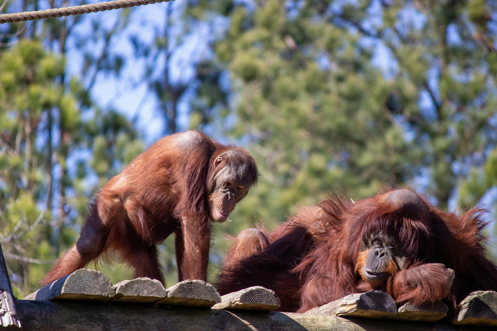
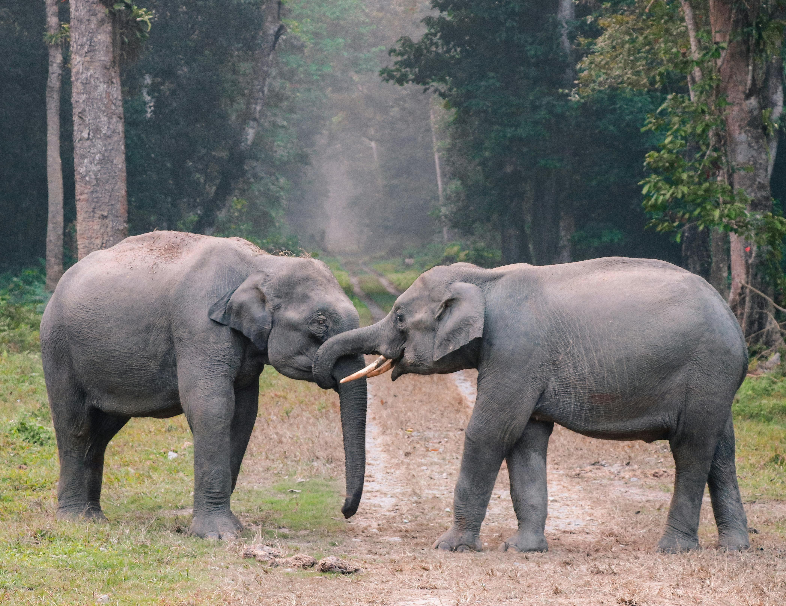

Spotted Javan Rhino in Ujung Kulon National Park
The rhino was grazing peacefully near the forest edge.
🦟
Photo: Javan Rhinoceros
Explore Indonesia's endangered species and community conservation activity

Rhinoceros sondaicus
Critically EndangeredLess than 80 individuals remain in the wild, all in Ujung Kulon National Park.
💡 Fun fact: Javan rhinos can weigh up to 2,300 kg and live 30-45 years in the wild.

Panthera tigris sumatrae
Critically EndangeredFewer than 400 remain in the wild, threatened by habitat loss and poaching.
💡 Fun fact: They are the smallest tiger subspecies and excellent swimmers.

Leucopsar rothschildi
Critically EndangeredBeautiful white bird endemic to Bali, with fewer than 100 in the wild.
💡 Fun fact: Known as Bali's only endemic bird species with striking blue eye patches.

Varanus komodoensis
VulnerableWorld's largest living lizard, found only in Indonesian islands.
💡 Fun fact: Can grow up to 3 meters long and their saliva contains over 50 strains of bacteria.

Nisaetus bartelsi
EndangeredIndonesia's national bird, with only 250-400 pairs remaining.
💡 Fun fact: Featured on Indonesia's coat of arms and can spot prey from over 1.5 km away.

Macaca nigra
Critically EndangeredKnown for their expressive faces, population declined 90% in 40 years.
💡 Fun fact: Also called "black ape" and famous for taking the world's first monkey selfie in 2011.

Pongo abelii
Critically EndangeredFewer than 14,000 remain due to deforestation and illegal pet trade.
💡 Fun fact: Share 97% of their DNA with humans and can use tools like sticks to extract insects.

Elephas maximus sumatranus
Critically EndangeredLost nearly 70% of habitat, only 2,000-2,500 individuals left.
💡 Fun fact: Smallest Asian elephant subspecies but can still weigh up to 5 tons and live 60-70 years.
The rhino was grazing peacefully near the forest edge.
Photo: Javan Rhinoceros
Great news! Local communities are partnering with conservation groups to protect tiger habitats.
Incredible to see this beautiful bird in the wild!
Photo: Bali Myna
Created this artwork for our conservation art project.
Artwork: Komodo Dragon Portrait